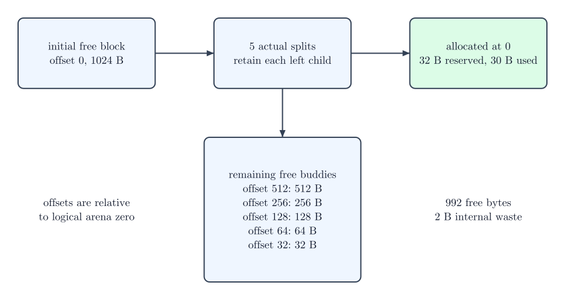
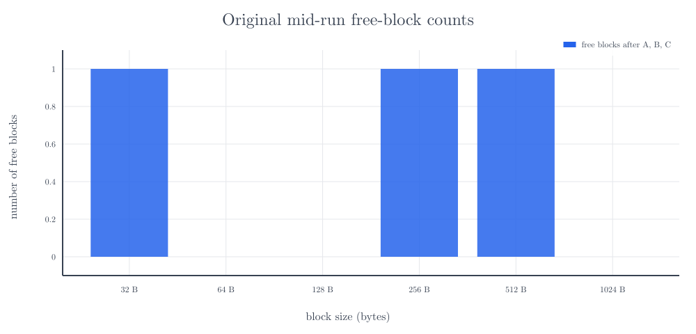
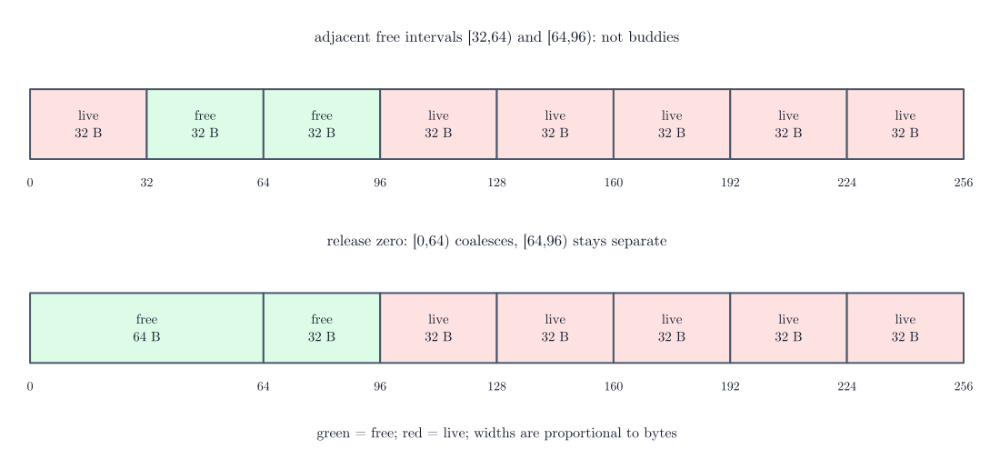
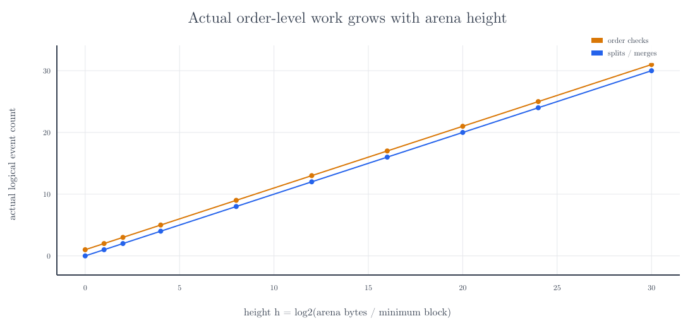

Buddy Allocation: Splitting, Rounding and True Buddies
Abstract
A binary buddy system manages a power-of-two arena by splitting blocks and coalescing free siblings. We preserve the original 1024-byte arena, 32-byte minimum, and requests of 30, 100 and 50 bytes. Actual native traces show how their offsets and rounding waste arise. A second example leaves enough free bytes for a request that still fails: adjacent free blocks need not be buddies. The C++ class models byte offsets and allocation metadata, without allocating payload storage. Checked dimensions and requests avoid invalid shifts; owned snapshots and operation traces make its invariants inspectable.
First split path: reserve 32 bytes for a 30-byte request
An arena of size T and minimum block m has orders zero through h, where T=m*2h. An order-k block has size B_k=m*2k and an offset divisible by B_k. The allocator selects the smallest adequate order containing a free block, then the lowest offset in that order. If necessary it repeatedly halves that block, retaining the left child and placing its right buddy in a free set.
For the original T=1024, m=32 arena, the first 30-byte request needs order zero. There is initially only one order-five block. The actual path contains five splits, leaving one free buddy at each smaller order. Reserving 32 bytes for the request leaves two bytes unused inside the allocated block.
#include <dm/dm.hpp>
int main() {
std::filesystem::create_directories("build");
dm::algorithms::BuddyAllocator arena(1024,32);
const auto trace=arena.allocate_trace(30);
const auto state=arena.snapshot();
if (trace.offset!=0 || trace.splits.size()!=5 || state.internal_fragmentation!=2) return 1;
std::print("| parent offset | parent order | parent bytes | retained left child | free right buddy | child bytes |\n"
"| ---: | ---: | ---: | ---: | ---: | ---: |\n");
std::string free_buddies="remaining free buddies";
for (const auto& step:trace.splits) {
std::print("| {} | {} | {} | {} | {} | {} |\n",step.offset,step.parent_order,
arena.block_size(step.parent_order),step.offset,step.offset+step.half_size,step.half_size);
free_buddies+=std::format("\noffset {}: {} B",step.offset+step.half_size,step.half_size);
}
dm::graphics::Diagram diagram(65,1100);
dm::graphics::DiagramNodeStyle style;style.width=3.5;style.height=1.8;
diagram.node("whole",{0,0},"initial free block\noffset 0, 1024 B",style)
.node("split",{5,0},std::format("{} actual splits\nretain each left child",trace.splits.size()),style);
style.fill={220,252,231};
diagram.node("allocated",{10,0},std::format("allocated at {}\n32 B reserved, {} B used",trace.offset,trace.requested),style);
style.fill={239,246,255};style.height=3.7;style.width=4;
diagram.node("free",{5,-4},free_buddies,style)
.edge("whole","split").edge("split","allocated").edge("split","free")
.text({0,-4},"offsets are relative\nto logical arena zero")
.text({10,-4},std::format("{} free bytes\n{} B internal waste",state.free_bytes,state.internal_fragmentation))
.save_svg("build/buddy_allocator_split.svg");
std::print("\nFree-list orders examined: {}; actual returned offset: {}.\n",trace.orders_examined,trace.offset);
std::print("Actual free offsets by order: {}.\n",state.free_offsets);
}| parent offset | parent order | parent bytes | retained left child | free right buddy | child bytes |
|---|---|---|---|---|---|
| 0 | 5 | 1024 | 0 | 512 | 512 |
| 0 | 4 | 512 | 0 | 256 | 256 |
| 0 | 3 | 256 | 0 | 128 | 128 |
| 0 | 2 | 128 | 0 | 64 | 64 |
| 0 | 1 | 64 | 0 | 32 | 32 |
Free-list orders examined: 6; actual returned offset: 0. Actual free offsets by order: [[32], [64], [128], [256], [512], []].

No backing byte buffer is created by BuddyAllocator. Offsets describe a logical arena, so this class demonstrates allocation policy rather than replacing malloc. The maps and free sets themselves do allocate host metadata. Copies model independent arenas; snapshots own their records and remain valid after mutation.
The original three requests and complete coalescence
Retain requests A=30, B=100 and C=50 bytes, allocated in that order. They reserve blocks of 32, 128 and 64 bytes at offsets 0, 128 and 64. This is smallest-available-order selection, rather than globally choosing the lowest address that could be obtained by splitting any larger block.
The native snapshot records both the reserved bytes and the actual requests. The original free-count histogram is retained. After freeing A, B and C in that order, their buddy cascades restore exactly one full-arena free block.
#include <dm/dm.hpp>
int main() {
std::filesystem::create_directories("build");
dm::algorithms::BuddyAllocator arena(1024,32);
const std::vector<int> requests{30,100,50};
const std::vector<std::string> names{"A","B","C"};
std::vector<int> offsets;
std::print("| allocation | requested bytes | offset | reserved block bytes | actual splits |\n"
"| :--- | ---: | ---: | ---: | ---: |\n");
for (std::size_t i=0;i<requests.size();++i) {
const auto t=arena.allocate_trace(requests[i]);
if (t.offset<0) return 1;
offsets.push_back(t.offset);
std::print("| {} | {} | {} | {} | {} |\n",names[i],requests[i],t.offset,arena.block_size(t.desired_order),t.splits.size());
}
const auto before=arena.snapshot();
const auto counts=arena.free_blocks_per_order();
if (offsets!=std::vector<int>{0,128,64} || before.allocated_bytes!=224 || before.requested_bytes!=180) return 1;
std::print("\nReserved: {} B; requested: {} B; internal waste: {} B ({:.2f}% of reserved bytes).\n",
before.allocated_bytes,before.requested_bytes,before.internal_fragmentation,
100.0*before.internal_fragmentation/before.allocated_bytes);
std::print("Free counts after allocation: {}. Total free bytes: {}.\n\n",counts,before.free_bytes);
std::print("| free | successful merges | actual probes | resulting offset | resulting order | free counts after release |\n"
"| :--- | ---: | ---: | ---: | ---: | :--- |\n");
for (std::size_t i=0;i<offsets.size();++i) {
const auto t=arena.free_trace(offsets[i]);
std::print("| {} | {} | {} | {} | {} | {} |\n",names[i],t.merges,t.probes.size(),t.final_offset,t.final_order,arena.free_blocks_per_order());
}
const auto after=arena.snapshot();
if (after.blocks.size()!=1 || after.blocks[0].allocated || after.largest_free_block!=1024) return 1;
std::vector<double> heights;std::vector<std::string> labels;
for (std::size_t order=0;order<counts.size();++order) {
heights.push_back(counts[order]);labels.push_back(std::format("{} B",arena.block_size(static_cast<int>(order))));
}
dm::graphics::RPlot::barplot(heights,labels,"free blocks after A, B, C",dm::RGB{37,99,235})
.title("Original mid-run free-block counts")
.x_label("block size (bytes)").y_label("number of free blocks").size(1000,480)
.save_svg("build/buddy_allocator.svg");
std::print("\nFinal largest free block: {} B; allocated bytes: {}. Earlier owned snapshot still records {} reserved bytes.\n",
after.largest_free_block,after.allocated_bytes,before.allocated_bytes);
}| allocation | requested bytes | offset | reserved block bytes | actual splits |
|---|---|---|---|---|
| A | 30 | 0 | 32 | 5 |
| B | 100 | 128 | 128 | 0 |
| C | 50 | 64 | 64 | 0 |
Reserved: 224 B; requested: 180 B; internal waste: 44 B (19.64% of reserved bytes). Free counts after allocation: [1, 0, 0, 1, 1, 0]. Total free bytes: 800.
| free | successful merges | actual probes | resulting offset | resulting order | free counts after release |
|---|---|---|---|---|---|
| A | 1 | 2 | 0 | 1 | [0, 1, 0, 1, 1, 0] |
| B | 0 | 1 | 128 | 2 | [0, 1, 1, 1, 1, 0] |
| C | 4 | 4 | 0 | 5 | [0, 0, 0, 0, 0, 1] |
Final largest free block: 1024 B; allocated bytes: 0. Earlier owned snapshot still records 224 reserved bytes.

For a current offset a and block size B, the unique same-order buddy is
Because a is aligned to B and m is a power of two, flipping that bit selects the other half of the same aligned 2B-byte parent. If that buddy appears in the actual free set at the same order, the two blocks merge at their smaller offset. Each merge increases the order, so the process terminates at the arena's maximum order or at the first unavailable buddy. Eager coalescing maintains the invariant that no two free same-order buddies remain separate.
The original rounding waste is 224-minus-180=44 bytes, or 19.64% of reserved bytes. For a request r larger than the minimum, the chosen block B satisfies B/2<r<=B, hence 0<=B-r<B/2. Requests at or below the minimum are an exception to the usual half-block bound: a one-byte request with a 32-byte minimum wastes 31 bytes, which is 96.875% of its reserved block.
Adjacent free blocks can still fail a larger request
Consider a 256-byte arena with eight 32-byte blocks. Fill it, then release offsets 32 and 64. Those free intervals are adjacent, with 64 free bytes in total, but neither can merge: the buddy of offset 32 is zero, and the buddy of offset 64 is 96. Both buddies are still allocated. A 64-byte request fails. Releasing zero permits the true pair at offsets zero and 32 to merge, making a 64-byte request succeed at offset zero.
#include <dm/dm.hpp>
int main() {
std::filesystem::create_directories("build");
dm::algorithms::BuddyAllocator arena(256,32);
std::vector<int> offsets;
for (int i=0;i<8;++i) offsets.push_back(arena.allocate(32));
(void)arena.free_trace(offsets[1]);(void)arena.free_trace(offsets[2]);
const auto fragmented=arena.snapshot();
const auto failure=arena.allocate_trace(64);
if (failure.offset!=-1 || fragmented.free_bytes!=64 || fragmented.largest_free_block!=32) return 1;
const auto release=arena.free_trace(offsets[0]);
const auto coalesced=arena.snapshot();
const auto success=arena.allocate_trace(64);
if (success.offset!=0 || release.merges!=1) return 1;
std::print("| state | free bytes | largest free block | request | returned offset |\n"
"| :--- | ---: | ---: | ---: | ---: |\n"
"| free offsets 32 and 64 | {} | {} | 64 | {} |\n"
"| also release offset 0 | {} | {} | 64 | {} |\n\n",
fragmented.free_bytes,fragmented.largest_free_block,failure.offset,
coalesced.free_bytes,coalesced.largest_free_block,success.offset);
std::print("| current offset | order | computed buddy | buddy in that free set |\n"
"| ---: | ---: | ---: | :--- |\n");
for (const auto& p:release.probes)
std::print("| {} | {} | {} | {} |\n",p.offset,p.order,p.buddy_offset,p.buddy_free);
dm::graphics::Diagram diagram(65,1100);
for (const auto& [state,y]:std::vector<std::pair<const dm::algorithms::BuddySnapshot*,double>>{
{&fragmented,0},{&coalesced,-3.5}}) {
for (const auto& block:state->blocks) {
const double left=block.offset/16.0,right=(block.offset+block.size)/16.0;
dm::graphics::DiagramStroke border;border.color={71,85,105};
diagram.polygon({{left,y-0.6},{right,y-0.6},{right,y+0.6},{left,y+0.6}},
block.allocated?dm::RGB{254,226,226}:dm::RGB{220,252,231},border)
.text({(left+right)/2,y},std::format("{}\n{} B",block.allocated?"live":"free",block.size),15)
.text({left,y-1},std::format("{}",block.offset),14);
}
diagram.text({16,y-1},"256",14);
}
diagram.text({8,1.5},"adjacent free intervals [32,64) and [64,96): not buddies",17)
.text({8,-2},"release zero: [0,64) coalesces, [64,96) stays separate",17)
.text({8,-5.3},"green = free; red = live; widths are proportional to bytes",16)
.save_svg("build/buddy_allocator_fragmentation.svg");
std::print("\nFailed allocation examined {} eligible orders and changed no state.\n",failure.orders_examined);
}| state | free bytes | largest free block | request | returned offset |
|---|---|---|---|---|
| free offsets 32 and 64 | 64 | 32 | 64 | -1 |
| also release offset 0 | 96 | 64 | 64 | 0 |
| current offset | order | computed buddy | buddy in that free set |
|---|---|---|---|
| 0 | 0 | 32 | true |
| 0 | 1 | 64 | false |
Failed allocation examined 3 eligible orders and changed no state.

This is external fragmentation under the buddy alignment rules, distinct from unused bytes inside a reserved block. Coalescing improves consolidation but cannot guarantee every request fitting the total free-byte count will succeed. The [Harvard CS 161 buddy-allocation lecture](https://read.seas.harvard.edu/cs161/2024/lectures/lecture5/) illustrates the same adjacent-nonbuddy obstruction. The example above uses the actual datamunge allocator state, not a drawing inferred from total free bytes.
Measured order work and implementation complexity
For a fully free 2h-byte arena with a one-byte minimum, allocating one byte examines h+1 orders and performs h splits. Freeing it probes and merges h buddies. The exact counts depend on height, not on a scan of all byte offsets. Even the largest shown logical arena, 230 bytes, allocates only host metadata.
#include <dm/dm.hpp>
int main() {
std::filesystem::create_directories("build");
std::vector<double> heights,searches,splits;
std::print("| height h | logical arena bytes | allocation order checks | splits | free buddy probes | merges |\n"
"| ---: | ---: | ---: | ---: | ---: | ---: |\n");
for (int h:{0,1,2,4,8,12,16,20,24,30}) {
dm::algorithms::BuddyAllocator arena(1<<h,1);
const auto allocation=arena.allocate_trace(1);
const auto release=arena.free_trace(allocation.offset);
if (allocation.orders_examined!=static_cast<std::size_t>(h+1) || allocation.splits.size()!=static_cast<std::size_t>(h) ||
release.probes.size()!=static_cast<std::size_t>(h) || release.merges!=static_cast<std::size_t>(h) ||
arena.snapshot().largest_free_block!=(1<<h)) return 1;
std::print("| {} | {} | {} | {} | {} | {} |\n",h,1<<h,allocation.orders_examined,allocation.splits.size(),release.probes.size(),release.merges);
heights.push_back(h);searches.push_back(allocation.orders_examined);splits.push_back(allocation.splits.size());
}
dm::graphics::RPlot::create()
.lines(heights,searches,"order checks",dm::RGB{217,119,6},2)
.points(heights,searches,"",dm::RGB{217,119,6},4)
.lines(heights,splits,"splits / merges",dm::RGB{37,99,235},2)
.points(heights,splits,"",dm::RGB{37,99,235},4)
.title("Actual order-level work grows with arena height")
.x_label("height h = log2(arena bytes / minimum block)")
.y_label("actual logical event count").size(1100,520)
.save_svg("build/buddy_allocator_order_work.svg");
dm::algorithms::BuddyAllocator large(1<<30,1);
const auto oversized=large.allocate_trace(INT_MAX);
bool dimensions=false,request=false,order=false;
try {dm::algorithms::BuddyAllocator invalid(1000,32);}
catch (const std::invalid_argument&) {dimensions=true;}
try {(void)large.allocate(0);}
catch (const std::invalid_argument&) {request=true;}
try {(void)large.block_size(31);}
catch (const std::out_of_range&) {order=true;}
if (!dimensions || !request || !order || oversized.offset!=-1 || oversized.orders_examined!=0) return 1;
std::print("\nInvalid dimensions, zero request and invalid block order rejected: {}, {}, {}.\n",dimensions,request,order);
std::print("Positive INT_MAX request: mathematical order {}, offset {}, eligible orders examined {}.\n",
oversized.desired_order,oversized.offset,oversized.orders_examined);
const auto ignored=large.free_trace(-1);
std::print("Unknown free released a block: {}; probes: {}.\n",ignored.released,ignored.probes.size());
}| height h | logical arena bytes | allocation order checks | splits | free buddy probes | merges |
|---|---|---|---|---|---|
| 0 | 1 | 1 | 0 | 0 | 0 |
| 1 | 2 | 2 | 1 | 1 | 1 |
| 2 | 4 | 3 | 2 | 2 | 2 |
| 4 | 16 | 5 | 4 | 4 | 4 |
| 8 | 256 | 9 | 8 | 8 | 8 |
| 12 | 4096 | 13 | 12 | 12 | 12 |
| 16 | 65536 | 17 | 16 | 16 | 16 |
| 20 | 1048576 | 21 | 20 | 20 | 20 |
| 24 | 16777216 | 25 | 24 | 24 | 24 |
| 30 | 1073741824 | 31 | 30 | 30 | 30 |
Invalid dimensions, zero request and invalid block order rejected: true, true, true. Positive INT_MAX request: mathematical order 31, offset -1, eligible orders examined 0. Unknown free released a block: false; probes: 0.

The height bound alone does not prove O(log N) time for this implementation. Its free sets and live maps are ordered associative containers. Membership, insertion and keyed lookup have logarithmic container costs, as specified by the [C++ associative-container requirements](https://eel.is/c++draft/associative.reqmts). Writing H=h+1 for the number of orders and B for the current number of free and live block records gives a conservative O(H log(B+1)) operation bound. Constant-time buddy arithmetic does not make the membership lookup constant. The usual O(H) buddy bound assumes suitable constant-time state lookup and free-list operations; it should not be claimed here merely from the split count.
Metadata takes O(H+B) storage. Ordinary operations do not build trace vectors; traced operations add O(H) records. Accounting methods scan live maps, while a complete owned snapshot copies and sorts interval metadata, taking O(B log(B+1)+H) time and O(B+H) storage. Snapshots are explicit operations, not hidden work included in the order-count curves.
The constructor checks positive power-of-two dimensions and minimum<=total before shifts or division. Requests must be positive. A positive request larger than the arena safely returns minus one, with no eligible-order access; a nonpositive request throws. Unknown frees retain their historical no-op policy. A live reused offset identifies its current allocation, so this integer-offset API cannot detect stale ownership from a previous allocation at that address.
Host allocation failure is distinct from insufficient logical arena capacity. The core prepares new metadata before removing the old source or children, and rolls allocation preparation back on failure. Thus a host exception leaves the allocator state unchanged. An isolated native test injects failure at every host-allocation position for plain/traced allocation and free, including split, no-split, coalescing and blocked-buddy paths; it also verifies recovery after each exception. Other native tests exhaust all 733 reachable eight-byte states and 13,927 operation transitions against an independent occupancy bitmap. Larger randomized arenas, original memory/format tests and UBSan check the remaining arithmetic, ownership, accounting and trace claims.
References
- K. C. Knowlton (1965), [A fast storage allocator](https://doi.org/10.1145/365628.365655), Communications of the ACM 8(10). The [author's bibliography](https://www.kenknowlton.com/pages/29papers.htm) identifies it as the binary splitting/recombination method later called the buddy system.
- Harvard CS 161 (2024), [Lecture 5: Buddy allocation, testing](https://read.seas.harvard.edu/cs161/2024/lectures/lecture5/), for aligned sibling coalescence and the data-structure assumptions behind height-based time bounds.
- C++ working draft, [Associative containers](https://eel.is/c++draft/associative.reqmts), for the ordered set/map operations used by this implementation.